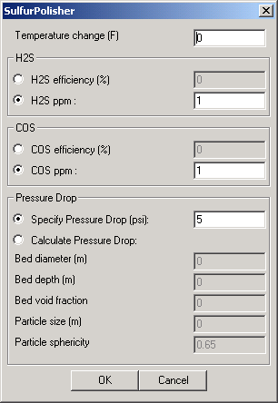
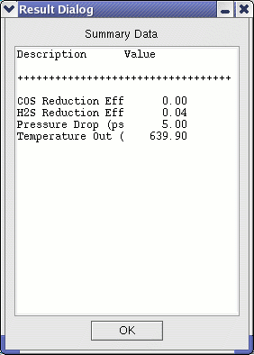

The Sulfur Polisher module is part of the warm (hot) gas cleanup unit, designed to follow the Bulk Desulfurizer and achieve very high removal of sulfur species from the gas stream. The primary sulfur species of concern are H2S and COS, and the unit is designed to achieve exit concentrations of about 0.1 ppm H2S and 0.01 ppm COS. While the Bulk Desulfurizer can reduce sulfur emissions to levels acceptable for gas turbine operation, very high removal is required for downstream equipment such as fuel cells and other catalytic units, and a sulfur polisher is needed. The Sulfur Polisher module is based on a non-regenerable, fixed sorbent bed (typically ZnO), operating at a nominal temperature of 672 K. The unit is intended to be placed downstream of the Bulk Desulfurizer and is assumed to be of use in both hot and warm gas cleanup systems, provided a suitable sorbent is used.
The Sulfur Polisher module acts as a component separator. The user provides either a removal efficiency or an exit concentration for COS and H2S. A temperature change can be specified to account for heat effects. Pressure drop across the unit can be specified or computed using specific module configuration details as shown in the User Interface (
|  | This user interface first allows the user to specify the change in temperature of the gas through the module--thereby accounting for heat losses. Negative values represent a decrease of temperature in the gas between inlet and outlet ports (heat lost by the gas). (Note that the temperature change is measured in degrees Fahrenheit) H2S and COS removal calculations can be made either by specifying the desired removal efficiencies or by specifying the desired exit concentrations. Appropriate exit concentrations are on the order of .1 ppm for H2S and .01 for COS. Pressure drop across the module can either be specified (in psi) or computed within the module. If the exit concentration is specified, the value should be below that of the inlet. The calculated pressure drop is based on the Ergun equation, with terms to account for the static head pressure drop (pressure lost in suspending the solid particles,) and the wall friction. Void fraction is defined as 1 - sorbent volume / bed volume. The particle size can be computed as the diameter of a sphere of the same volume as the particle. The sphericity is the surface area of the sphere described above divided by the actual particle surface area. Default values are provided for temperature drop, exit acid gas concentrations, specified pressure drop, and sphericity (for the computed pressure drop option). |
|  | After the module has executed, the Summary Data button provides summary information. The module outputs module Reduction Efficiencies for both COS and H2S, as well as the Pressure Drop (in psi) across the module and the Temperature Out (K) of the resultant outlet stream. |